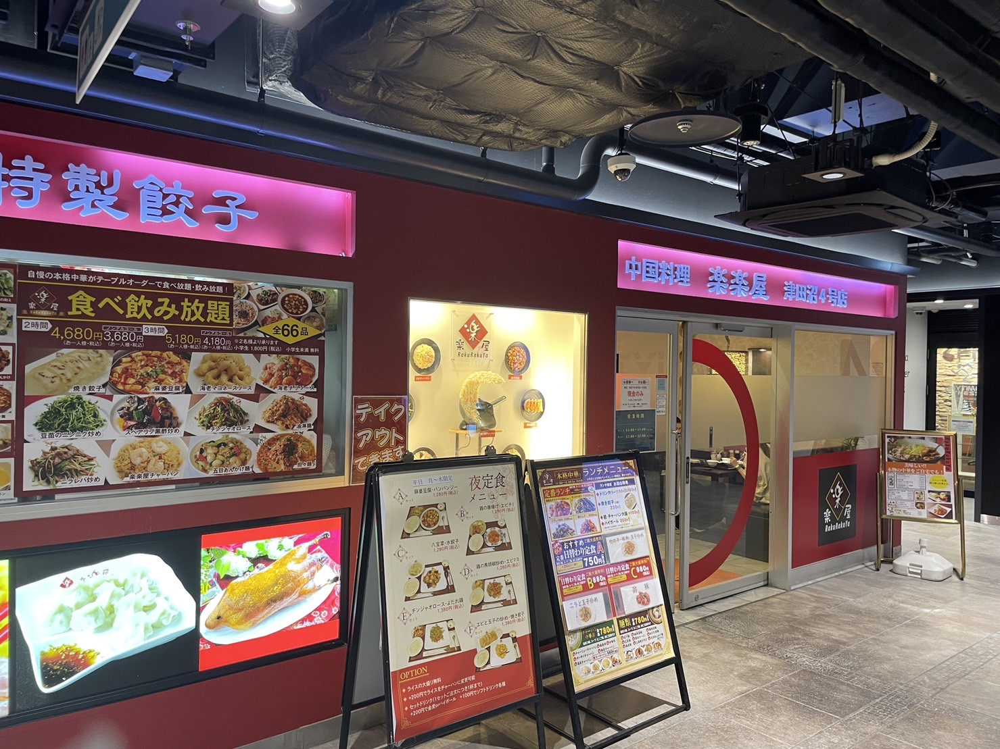
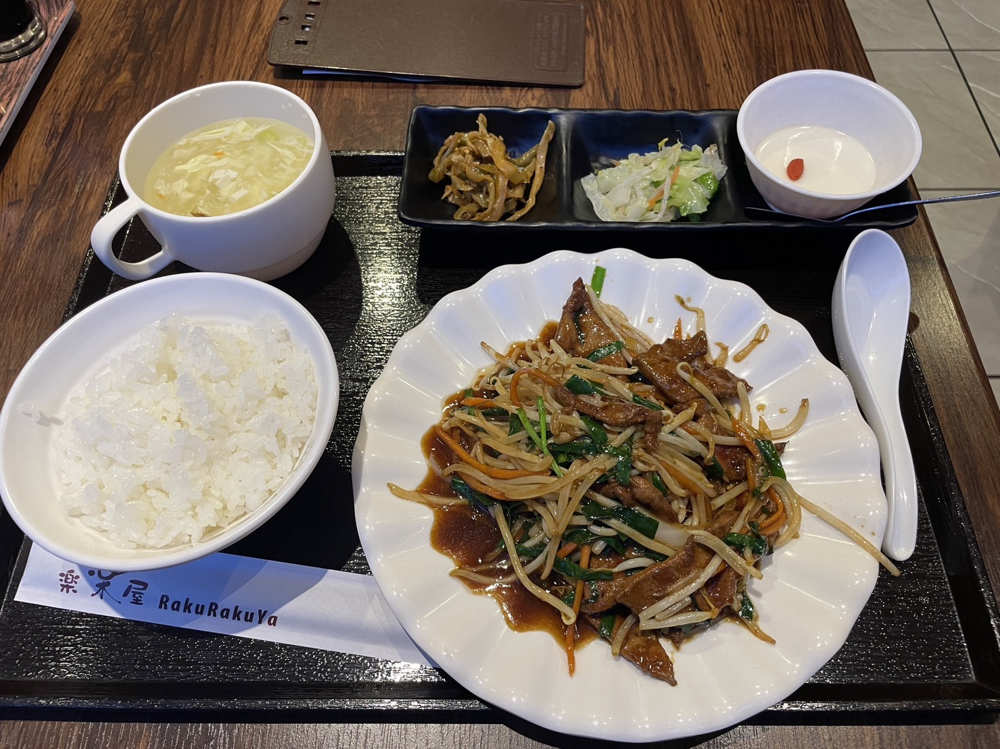
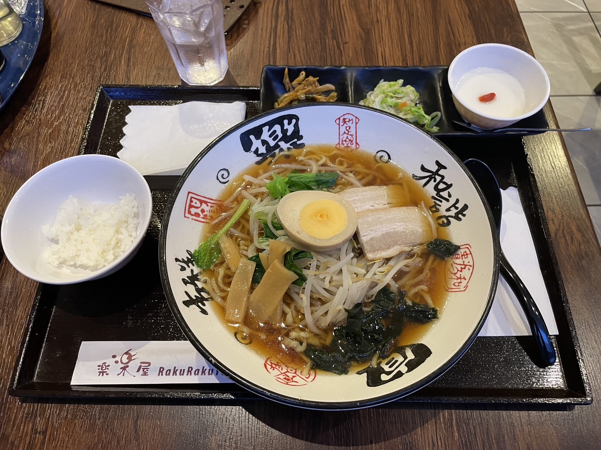
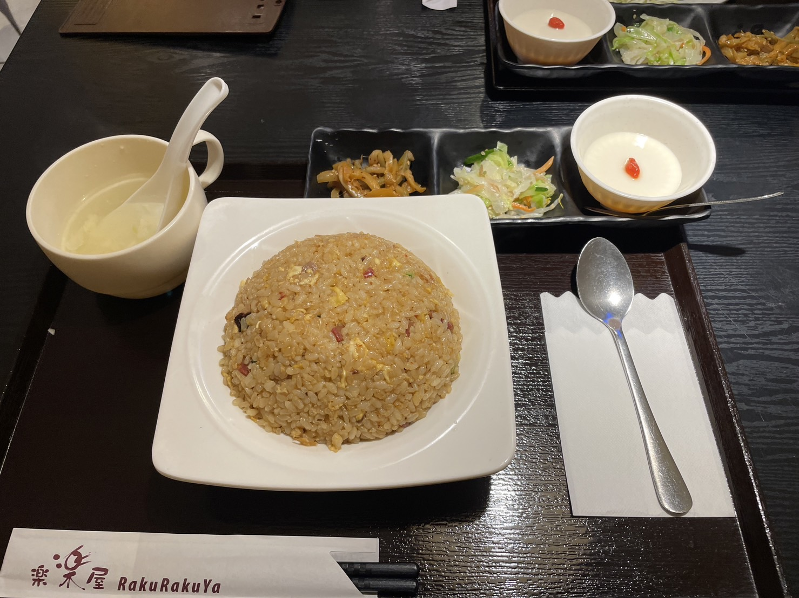

ランチの時間とディナーの時間しかやっておらず開店時間は短いです
毎回日替わりランチが3種類と定番の物があり、毎日通っていても飽きません。
日替わりランチは平日限定なので注意です。



実際に行った際の感想
どれも本格的中華綾里であり、どれ食べてもおいしかったです。
量も少ないわけではなくしっかりあり満足感があります。スープとかも飲み放題なので寒い時にはものすごく温まります。
欠点を言うなら、ラーメンのメンマとか煮卵は物凄く冷たかったのが唯一の欠点です。でも安いので文句は言えません。
| 所在地 | 千葉県習志野市谷津７丁目７-１LoHaru津田沼B1 |
| 電話番号 | +047-409-9865 |
ここに千葉工業大学からお店までは、徒歩4分
JR津田沼駅から徒歩5分。
◆最新の情報は #Twitter でチェック！◆